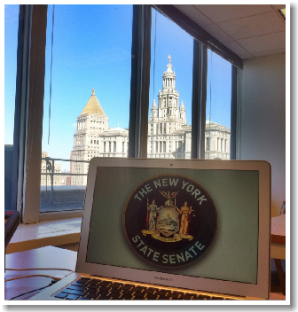

The New York State Senate is seeking visionaries to
help redefine the online interaction of citizens and their elected representatives.
You understand the power of good design.
How about using it to improve our government?
Internship in Front-End Design
Senate Technology Services | NYC, Fall 2011
Who we are
We are a non-partisan team of software engineers, designers, trainers, and managers committed to improving government. We do this by leveraging cutting-edge technology on behalf of New York's 62 State Senators. You can find us on Twitter: @nysenatetech.
What we do
We build tools and platforms that help Senators and their staff collaborate with one another and communicate with the public. We also manage the technical infrastructure that supports this activity.
Since 2009, we've created NYSenate.gov, Open Legislation, native mobile apps for Android and iOS, and the Senate's internal constituent relationship management system, Bluebird.
Since our work is paid for by taxpayers, we release the source code for our in-house projects to the public. You can find it here.
Where your vision is needed
We are looking to push the limits of the web and mobile apps as mediums for two way-communication between citizens and their elected representatives. To that end, we seek interns who are interested in substantial, multi-disciplinary design projects for our public-facing properties, namely NYSenate.gov, Open Legislation, and our Mobile Applications.
Our primary goals for public-facing properties are clarity and ease of use. In some cases, we're looking to refine existing interfaces that just aren't quite right. In other cases, we're trying to come up with a bold, fresh take on traditional concepts. We're also open to implementing ideas and concepts that other government entites might perceive to be too edgy or avant-garde.
If this sounds interesting, we'd love to talk with you.
Details
Graduate and Undergraduate students from the New York City area are encouraged to apply. An understanding of the known limits of HTML, Javascript, and CSS would be a plus. A familiarity with Drupal theming conventions would be also be useful to an applicant. However, neither set of skills is an absolute requirement.
Our NYC office is located at 250 Broadway.
This internship is unpaid and typically lasts the duration of a semester. Past interns have applied Senate Technology internships toward school credits. Interns will be expected to commit 10 hours per week to project work.
Send a copy of your resume along with work samples to blair@nysenate.gov.